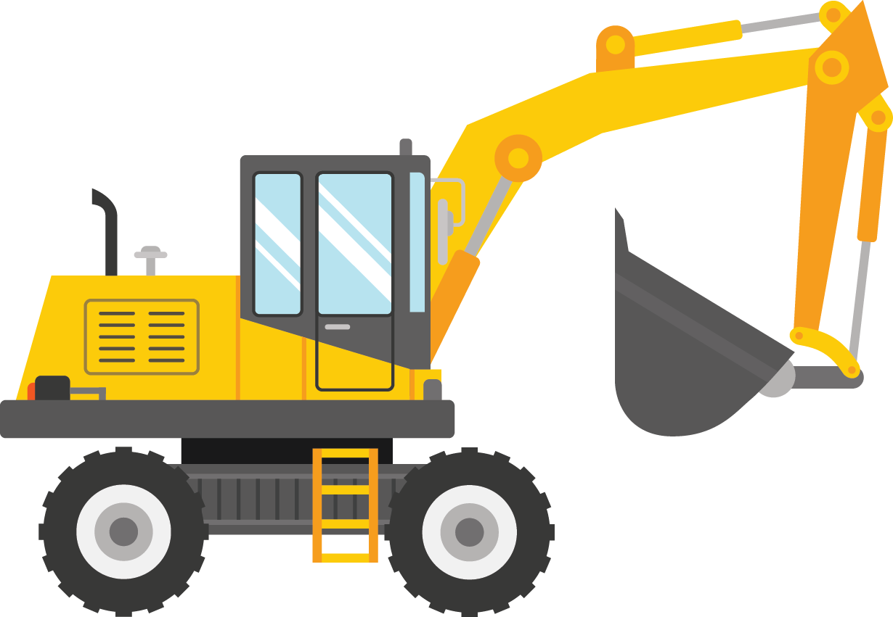
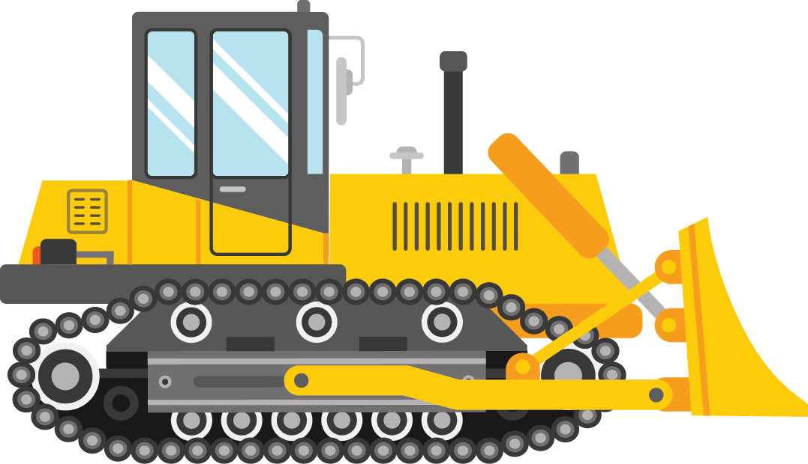

<header class="menuNav">
    <nav>
        <figure>
            
        </figure>
        <ul class="container">
            <li><a ui-sref="aboutUs">Quienes Somos</a></li>
            <li><a ui-sref="contactUs">Contáctenos</a></li>
            <li id="homeId"><a ui-sref="home">KAVOLCO</a></li>
            <li id="buttonNav"><button class="glyphicon glyphicon-menu-hamburger" ng-click="mCtrl.rotateBtn = !mCtrl.rotateBtn" ng-class="{'buttonReverse' : mCtrl.rotateBtn }"></button></li>
        </ul>
        <div class="navHidden" ng-if="mCtrl.rotateBtn">
            <ul>
                <li><a ui-sref="aboutUs">Quienes Somos</a></li>
                <li><a ui-sref="contactUs">Contáctenos</a></li>
            </ul>
        </div>
    </nav>
</header>
<section class="aboutUsContainer">
    <div class="titlePage">
        <span class="titleFirts">Productos y Servicios</span>
    </div>
    <div class="servicesContainer">
        <div class="col-xs-11 col-sm-6 col-md-4 col-lg-3" ng-click="mCtrl.chole()">
            <div class="containerImage">
                <figure>
                    
                </figure>
            </div>
            <div>
                <span>Maquinaria</span>
            </div>
        </div>
        <div class="col-xs-11 col-sm-6 col-md-4 col-lg-3">
            <div class="containerImage">
                <figure>
                    
                </figure>
            </div>
            <div>
                <span>Servicios</span>
            </div>
        </div>
        <!--<div class="col-xs-3"></div>-->
        <!--<div class="col-xs-3"></div>-->
    </div>
</section>
<footer>

</footer>
<!--<div class="servicesContainer">-->
    <!--<div>-->
        <!--<span>Maquinaria</span>-->
        <!--<div class="col-xs-11 col-sm-6 col-md-4">-->
            <!--<figure>-->
                <!---->
            <!--</figure>-->
            <!--<span>Camabaja</span>-->
            <!--<div>-->
                <!--<p>-->
                    <!--También es conocido como remolque de plataforma baja y básicamente-->
                    <!--nos referimos a una herramienta que nos ayuda a transportar, o como-->
                    <!--su nombre lo dice, a remolcar objetos pesados fácilmente, gracias a su especial forma.-->
                    <!--El primer lowboy fue utilizado en 1920.-->
                    <!--Este tipo de remolque es  adecuado para cargas pesadas y de gran tamaño.-->
                <!--</p>-->
            <!--</div>-->
        <!--</div>-->
        <!--<div class="col-xs-11 col-sm-6 col-md-4">-->
            <!--<figure>-->
                <!---->
            <!--</figure>-->
            <!--<span>Maquina retroexcavadora</span>-->
            <!--<div>-->
                <!--<p>-->
                    <!--La retroexcavadora es una máquina que se utiliza para realizar excavaciones en terrenos.-->
                    <!--Consiste en un balde de excavación en el extremo de un brazo articulado de dos partes.-->
                    <!--Se montan normalmente en la parte posterior de un tractor o cargador frontal,-->
                    <!--no debe ser confundido con una excavadora.-->
                <!--</p>-->
            <!--</div>-->
        <!--</div>-->
        <!--<div class="col-xs-11 col-sm-6 col-md-4">-->
            <!--<figure>-->
                <!---->
            <!--</figure>-->
            <!--<span>MotoNiveladora</span>-->
            <!--<div>-->
                <!--<p>-->
                    <!--Una motoniveladora es una máquina de construcción que cuenta con una larga hoja metálica-->
                    <!--empleada para nivelar terrenos, además posee escarificadores para terrenos duros,-->
                    <!--los cuales puede ubicar al frente, en medio del eje delantero y la cuchilla o en la parte trasera,-->
                    <!--llamándose en este caso ripper.-->
                <!--</p>-->
            <!--</div>-->
        <!--</div>-->
        <!--&lt;!&ndash;<div class="col-xs-12 col-sm-6 col-md-4">&ndash;&gt;-->
        <!--&lt;!&ndash;<figure>&ndash;&gt;-->
        <!--&lt;!&ndash;&ndash;&gt;-->
        <!--&lt;!&ndash;</figure>&ndash;&gt;-->
        <!--&lt;!&ndash;<span></span>&ndash;&gt;-->
        <!--&lt;!&ndash;<div>&ndash;&gt;-->

        <!--&lt;!&ndash;</div>&ndash;&gt;-->
        <!--&lt;!&ndash;</div>&ndash;&gt;-->
    <!--</div>-->
<!--</div>-->